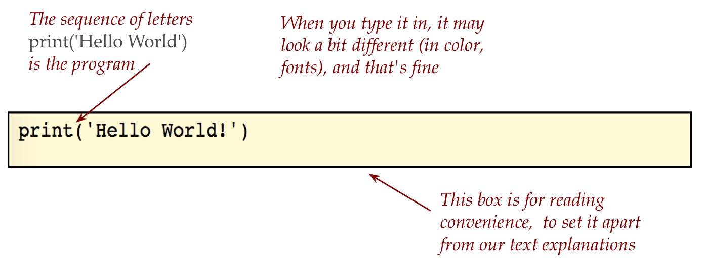
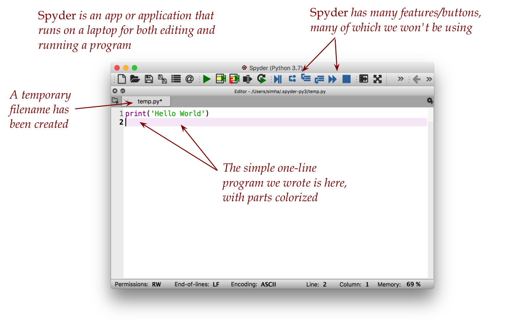
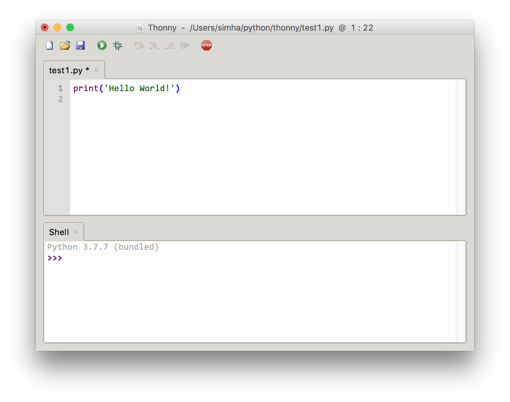
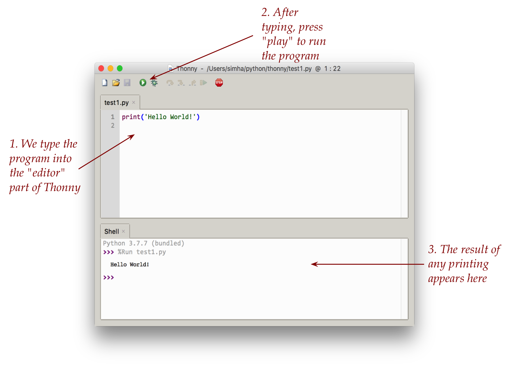

Module 0: Your First Program
Objectives
By the end of this module you will be able to:
- Experince writing a really simple program.
- Explain the difference between command-line outputs vs GUI for programs.
0.0: Our First Program
Lets take a look at our first program as it appears in a textbook (like this one):
print("Hello World")This is a simple program written in the Python programming language, possibly one of the smallest programs one can write, and a traditional starting point for learning programming.
We will very soon (below) write this program ourselves.
For now, let’s point out a few things:
- What we see above is the text of the program. 
- The entire program will appear inside of a code editor when we write.
- We could use one of several code editors.
- For example, this is how it would look inside the Spyder code editor: 
- And how it might look in the Thonny code editor: 
- Various editors colorize in different ways for convenience of reading, none of which affect the actual text of the program.
- Apart from typing it in (which you’ll do shortly), we haven’t actually run the program.
- Intuitively, just looking at the program we might think that:
- It has to do with some kind of “printing” (because we see
print) - We have no idea what is meant by the somewhat odd phrase “Hello World!”, but we see it there.
- It has to do with some kind of “printing” (because we see
- There are several ways to run a program:
- Run the program inside the very same editor used to type in the program.
- Run it without any editor (a slightly advanced topic).
- For example, if we run the program using the Thonny editor, we will see this: 
Next, you will try this yourself.
So, what’s with printing the unusual phrase “Hello World!”?
- It’s a tradition in computer science that your first program will print “Hello World!”.
- It’s meant to pretend that a program is a creature that’s itself communicating to the outside world by saying hello.
0.1 The recipe-cook-dish analogy
What just happened above?
Let’s use an analogy 
A recipe is a bunch of instructions in text form.
⇒ A program is also a set of instructions in text form.By itself, a recipe doesn’t do anything until it’s acted on.
⇒ You can type up a program but not do anything with it (i.e., not run it).A cook executes a recipe by following the instructions
⇒ A combination of elements in your laptop executes a program.The net result of a cook executing a recipe is, typically, a dish.
⇒ The result of executing a program is the program’s outputWe of course design and write up programs to get useful or interesting output.
When a recipe is poorly written, or if the cook messes up, the result may be failure.
⇒ A program and the laptop are even more exacting: the slightest error can result in failure.
0.2 Programming vs. computerese
What we mean by computerese:
The computer-related tasks and knowledge that are needed, but not the intellectual core of programming.
We use the term slightly pejoratively, like legalese.
⇒ A necessary evil.Examples of computerese:
- Navigating directories
- Locating files, copying them, moving them.
- Mastery of editor keys, shortcuts.
- Handling the quirks of an operating system.
- Uploading files to a website, downloading.
There is nothing to submit for this particula exercise; it is aimed at generally helping you get proficien with using your computer for programming.
0.3 A slight variation
We will now spend a bit of time trying a few variations, and also examining what happens when typing mistakes are made.
Consider this program:
print('Hello World!')
print('My name is X')In the future we will be asking you to “type up” programs; in all such cases, please also save the file (for eventual submission)
0.4 What happens when things go (even slightly) wrong
We’ll now deliberately make a few tiny errors and see what happens:
Error #1: forgetting to type the closing parenthesis.
- Here’s the program:
print('Hello World!'Note the missing right parenthesis at the end of the line.
- What happens when we nonetheless try and run the program?
- Here’s an example with the Thonny editor:

Error #2: What happens if we forget the quotation marks?
- Here’s the program:
print(Hello World!)- We get something quite similar:

0.5 A peek at a more complex program
Just to see what’s coming later, let’s get a sense of what a more complex program looks like.
Your goal is to look through it with bemused curiosity, as if studying an incomprensible work of abstract art.
We’ll just examine the some surface features, as we would when examining some undeciphered ancient script such as: 
Let’s start by running the program.
Download whackamole.py into your module0 folder Then open it and run it. You should see  The purpose of the program and how you use it should be easy to figure out.
The purpose of the program and how you use it should be easy to figure out.
Let’s point out a few things:
- Unlike the toy
test.pyexample, this program actually does something nontrivial. - The program brings up a window, and allows a user to interact with it (the program).
Now let’s list the program and then point out some “surface” features.
The full program:
# whackamole with nerf gun
# Use programs written by others through "import"
import tkinter as tk
# Define a window
window = tk.Tk()
# The instructions at the top
instructions = 'Click reset, then click fire to strike the mole'
label = tk.Label(text=instructions)
label.pack()
# Build a rectangular space on which to draw
# shapes like circles
w = 300
h = 200
canvas = tk.Canvas(master=window, width=w, height=h)
canvas.pack()
# These are variables that control the
# position of the target and nerf ball
targetX = 0
targetVX = 10
nerfX = 0
nerfY = h-10
nerfVX = 20
nerfVY = 0
nerfAY = -3
delT = 0.1
nerfFired = False
# This is what we want to do when the
# reset button is clicked:
def reset():
global nerfFired, targetX, nerfX, nerfY, nerfVY
nerfFired = False
targetX = 0
nerfX = 0
nerfY = h-1
nerfVY = 0
canvas.delete("all")
print('reset')
# When the fire button is clicked, we change
# the status of the nerf gun
def fire():
# start launch
global nerfFired
nerfFired = True
print('fired')
# Build the three buttons called "reset", "fire" and "quit"
frame = tk.Frame(master=window)
frame.pack()
resetb = tk.Button(
master=frame, text="reset", relief=tk.RIDGE,
fg='black', bg='grey', height=2, width=5,command=reset)
resetb.grid(row=0, column=0)
fireb = tk.Button(
master=frame, text="fire", relief=tk.RIDGE,
fg='black', bg='grey', height=2, width=5, command=fire)
fireb.grid(row=0, column=1)
quitb = tk.Button(
master=frame, text="quit", relief=tk.RIDGE, fg='black',
bg='grey', height=2, width=5, command=window.destroy)
quitb.grid(row=0, column=2)
# This part of the code draws and animates
def run():
global targetX, nerfX, nerfVY, nerfY
canvas.delete("all")
targetX += targetVX * delT
canvas.create_rectangle(
targetX, h-10, targetX+10, h, fill="green")
if nerfFired:
nerfX += nerfVX * delT
nerfVY += nerfAY * delT
nerfY += nerfVY * delT
canvas.create_oval(
nerfX+5,h-nerfY+5, nerfX+15, h-nerfY+15,
fill="red")
window.after(1, run)
# Launch the window and start the animation
window.after(1, run)
window.mainloop()Yes, that’s a long program! Now let’s point out some features:
First, some features from the first half of the program: 
And some from the latter part:And some from the latter part: 
0.6 GUI vs command-line
GUI stands for: Graphical User Interface.
And is pronounced like “gooey”.
The difference between GUI and command-line programs:
- Programs like
test.pyfrom earlier printed plain text. These are Command-line programs. - Programs like
whackamole.pybring up their own little window on your screen. These are called GUI programs. - GUI programs are typically more complicated because one has to specify all the elements (buttons etc) of the interface.
- We will spend quite a bit of time learning programming with simpler (albeit less exciting) command-line programs.
- However, we will occasionally work with GUI programs because they are visually more interesting, and demonstrate applications.
0.7 Computer science: beyond programming
Is computer science the same as programming?
Not at all:
Programming is certainly a significant part, just as narrative non-fiction is a significant part of an English degree.
⇒ But there’s much more to it.
What else does a computer science degree feature? Typically:
- Programming devices (units 9-10).
- An understanding of the hardware (units 11-12).
- Algorithms: the science in computer science.
- Theory: understanding fundamental theoretical limitations of computation.
- A deeper understanding of how computer systems work: networks, databases, operating systems.
But also electives among (to name a few):
- Artificial intelligence, machine learning, robotics, computer vision, natural language processing.
- Design of interfaces.
- Graphics, animation, visualization.
- Digital humanities, computing for arts and social sciences.
- Scientific computing.
- Computational X, where X=biology, physics, economics …
- Educational tools, health data systems.
- Medical devices, prosthetics, control of mechanical systems
0.8 How to succeed as a student
The challenge in learning programming:
1: it’s an alien world.
⇒ Takes getting used to.
2: it’s a mental skill
⇒ Skills are acquired slowly, with much practice, and in fits and starts.
3: there are confounding issues
⇒ some knowledge of (regrettably) computerese needed.
4: it’s easy to feel overwhelmed or intimidated
⇒ your neighbor may appear to be “getting it” while you feel you don’t.
What you should expect:
- You can’t learn instantly
⇒ You may have to see a concept multiple times to “get it”. - You may occasionally feel bewildered.
- There are some things that can’t be understoodat this stage.
⇒ Not enough background. - It’s deceptively easy to understand an idea when reading or viewing but devilishly harder to do it yourself.
How to succeed:
- Make progress every day
⇒ Each module builds on previous modules
⇒ Can’t afford to let anything slide. - Be willing to put the effort
⇒ Do all exercises, assignments etc. - Practice being irrepressibly positive.